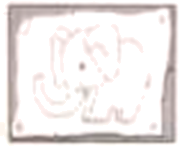
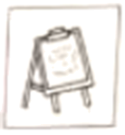
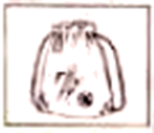
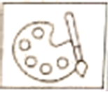
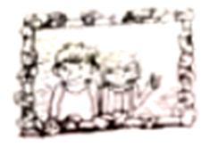

2023年北京市中考英语真题 原卷解析
2023年北京市初中学业水平考试
时间: 90 分钟 满分: 60分
第一部分
本部分共33题, 共40分。在每题列出的四个选项中, 选出最符合题目要求的一项。
一、单项填空 (每题0. 5分, 共6分)
从下面各题所给的A、B、C、D四个选项中, 选择可以填入空白处的最佳选项
1. My sister enjoys singing and ________ favorite subject is music.
A. hisB. herC. yourD. their
【答案】B
【解析】
【详解】句意：我妹妹喜欢唱歌，她最喜欢的科目是音乐。
考查代词辨析。his他的；her她的；your你的；their他们的。根据“My sister enjoys singing”可知此处指“我妹妹”最喜欢的科目，用her。故选B。
2. It’s a good idea to visit Beijing ________ October.
A. atB. onC. inD. to
【答案】C
【解析】
【详解】句意：在十月份参观北京是个好主意。
考查时间介词。at后接具体时刻等；on后接具体某一天等；in后接年月等；to到。根据“October”可知此处表示在十月，用介词in。故选C。
3. —Must I stay here and wait for you?
—No you ________. You can go home now.
you ________. You can go home now.
A. needn’tB. can’tC. mustn’tD. shouldn’t
【答案】A
【解析】
【详解】句意：——我必须待在这里等你吗？——不，你不需要。你现在可以回家。
考查动词辨析。needn’t不需要；can’t不能；mustn’t禁止；shouldn’t不应该。根据“Must I stay here and wait for you?”可知，用情态动词must提问，其否定回答应用needn’t表示“不需要”。故选A。
4. —Which do you like ________, swimming or skating?
—Swimming.
A. wellB. betterC. bestD. the best
【答案】B
【解析】
【详解】句意：——你更喜欢哪一个，游泳还是滑冰？——游泳。
考查副词比较级。根据“swimming or skating”可知两者相比较，此处用比较级better。故选B。
5. —________ do you tidy your own room?
—Twice a week.
A. How oftenB. How soonC. How muchD. How long
【答案】A
【解析】
【详解】句意：——你多久整理一次你自己的房间？——一周两次。
考查疑问词组。How often多久一次；How soon多久以后；How much多少（钱）；How long多久。根据“Twice a week.”可知询问频率，用How often提问。故选A。
6. It was difficult to climb the mountain, ________ Sam got to the top at last.
A. orB. soC. forD. but
【答案】D
【解析】
【详解】句意：爬山很困难，但是Sam最终还是到达了山顶。
考查从属连词辨析。or或者，否则；so因此；for因为；but但是。根据空前“It was difficult to climb the mountain”和空格后“Sam got to the top at last”可知前后分句为转折关系，应用表示转折关系的连词but来连接。故选D。
7. —Lucy, what are you doing?
—I ________ a model ship.
A. makeB. madeC. am makingD. was making
【答案】C
【解析】
【详解】句意：——露西，你在干什么？——我正在制作一个轮船模型。
考查现在进行时。根据“what are you doing?”可知句子应用现在进行时来回答，其谓语结构为：am/is/are+现在分词。故选C。
8. The Shenzhou-15 astronauts ________ to Earth safely on June 4, 2023.
A. returnB. returnedC. will returnD. have returned
【答案】B
【解析】
【详解】句意：神舟15号宇航员于2023年6月4日安全返回地球。
考查时态。根据“on June 4, 2023”可知是过去发生的事情，用一般过去时，谓语用过去式returned。故选B。
9. If you go to the concert with us tomorrow, you ________ a great time there.
A. haveB. hadC. will haveD. have had
【答案】C
【解析】
【详解】句意：如果你明天和我们一起去听音乐会，你会玩得很开心的。
考查时态。if引导的条件状语从句遵循主将从现原则，主句用一般将来时，其结构为will do。故选C。
10. Eric ________ many things since he became interested in science.
A. is learningB. was learningC. will learnD. has learned
【答案】D
【解析】
【详解】句意：自从Eric对科学感兴趣以来，他已经学习了很多东西。
考查现在完成时。根据“since he became interested in science”可知，句子应用现在完成时，其谓语结构 ：have/has+过去分词。故选D。
：have/has+过去分词。故选D。
11. The park is getting more and more beautiful because more kinds of flowers ________ every year.
A. are plantedB. were plantedC. plantD. planted
【答案】A
【解析】
【详解】句意：这个公园变得越来越美丽因为每年都有更多种花被种。
考查时态和语态。主语“more kinds of flowers”与动词plant之间是动宾关系，结合“every year”可知用一般现在时的被动语态，其结构为am/is/are done。故选A。
12. —Lily, can you tell me ________ during the Dragon Boat Festival this year?
—Sure. We ate zongzi and watched a dragon boat race.
A. what you will doB. what you didC. what will you doD. what did you do
【答案】B
【解析】
【详解】句意：——莉莉，你能告诉我今年端午节你做了什么吗？——确定。我们吃了粽子，看了赛龙舟。
考查宾语从句。tell后缺少直接宾语，用宾语从句，宾语从句用陈述语序，排除CD；主现从不限，结合“We ate zongzi and watched a dragon boat race.”可知，从句用一般过去时，排除A。故选B。
二、完形填空 (每题1分, 共8分)
阅读下面的短文，掌握其大意，然后从短文后各题所给的A、B、C、D四个选项中，选择最佳选项。
Be What’s Missing
Where was that cashier (收银员)? Impatient, I quickly looked at my watch. I hardly had enough time to eat a sandwich and rush back to work.
I looked around the nearly empty ____13____, but the cashier was nowhere in sight. A woman stood wiping (擦) the far end of the counter. She looked at me coldly with sad, dark eyes.
I ____14____, getting angry. I’d been standing there for at least three minutes!
Controlling my anger, I remembered Mom’s words. “Whenever you find yourself in an unpleasant situation, just think about what is missing. If someone is unkind, then kindness is missing. If someone is hateful, then ____15____ is missing. If we will be what’s missing, then we’ll provide whatever the situation needs.”
And here I was in an unpleasant situation. How should I “be what’s missing”? What was missing was ____16____. Maybe I should just jump behind the counter and take my own order.
Just then the woman walked slowly towards me. “May I help you?” she asked, still ____17____. She looked so tired. No doubt, she was overworked.
I took a deep breath. With Mom’s words ringing in my head, I gave the woman my order ... and smiled. “How are you today?”
My question seemed to ____18____ her. She eyed me for a second before answering. “Not too good.”
“I’m sorry.” I said. “I hope it gets better starting right now.”
She almost smiled as she looked at me. “Thanks. I hope you’re right.”
I thought to myself as I ate my sandwich. We’re all the same, really. We have problems and angers, we get tired and we hurt. We need to be ____19____ to each other.
After eating, I wiped the table cleaner than usual, and put the tray (托盘) back nicely on the stand. The woman was watching me, a big smile on her face.
“Be what’s missing.” It ____20____.

13. A. restaurantB. streetC. schoolD. office
14. A. agreedB. finishedC. waitedD. left
15. A. trustB. loveC. patienceD. confidence
16. A. hopeB. adviceC. moneyD. service
17. A. nervouslyB. carefullyC. coldlyD. kindly
18. A. disappointB. hurtC. troubleD. surprise
19. A. nicerB. coolerC. closerD. fairer
20. A. saidB. workedC. readD. ended
【答案】13. A 14. C 15. B 16. D 17. C 18. D 19. A 20. B
【解析】
【导语】本文是一篇记叙文。主要讲述了作者在快餐店吃饭时，因为迟迟没有人点单而生气，但是想到了妈妈的话他决定对别人友善一些。他认为我们每个人都是一样的，有烦恼会生气 ，会累也会受伤，因此我们需要更耐心地对待他人。
【13题详解】
句意：我环顾了几乎空荡的餐厅，但收银员不在视线内。
restaurant餐厅；street街道；school学校；office办公室。根据上文“I hardly had enough time to eat a sandwich and rush back to work.”并结合空后“but the cashier was nowhere in sight”可推断出作者需要出来吃点东西，然后回去工作，应是环顾餐厅。故选A。
【14题详解】
句意：我在等待中变得生气。
agreed同意；finished完成；waited等待；left留下。根据后文“I’d been standing there for at least three minutes! ”可知此处指的是在等待中变得生气。故选C。
【15题详解】
句意：如果一个人是讨厌的，那么爱不见了。
trust相信；love爱；patience耐心；confidence自信心。根据前文“If some one is unkind, then kindness is missing.”可知unkind和kindness为对应关系，结合空前“If someone is hateful”与hateful对应的词为love，故选B。
【16题详解】
句意：不见的是服务。
hope希望；advice建议；money钱；service 服务。根据空后“Maybe I should just jump behind the counter and take my own order. ”可推知此处指的是服务。故选D。
【17题详解】
句意：“我可以帮你吗?”她仍然冷漠地问。
nervously紧张地；carefully仔细地；coldly冷漠地；kindly友善地。根据第二段最后一句“She looked at me coldly with sad, dark eyes.”可知此处是coldly的同词复现，对应空格前的“still”，意思是她仍然冷漠地问。故选C。
【18题详解】
句意：我的问题似乎使她惊讶。
disappoint使失望；hurt使受伤；trouble使烦恼；surprise使惊讶。根据后文“She eyed me for a second before answering.”可推知作者的问题似乎使她惊讶。故选D。
【19题详解】
句意：我们需要对彼此更友善。
nicer更友善的；closer更近的；cooler更冷漠的；fairer更公正的。根据前文“We’re all the same, really. We have problems and angers, we get tired and we hurt.”可推知需要对彼此更友善。故选A。
【20题详解】
句意：“成为缺失的东西。”它凑效了。
said说；worked工作，奏效；read阅读；ended结束。根据“The woman was watching me, a big smile on her face.”可推知作者以善良应对冷漠，最终奏效了。故选B。
三、阅读理解 (每题2分, 共26分)
(一) 阅读下列课程介绍, 请根据人物喜好和需求匹配最适合的课程, 并将课程所对应的A、B、C、D选项填在相应位置上。选项中有一项为多余选项。
A
Short Art Courses
A. Wild Art This course is about drawing and painting. You’ll use your new skills to make a wall poster of animals. And we’ve got lots of picture books to give you ideas.  | B. Art Matters This course teaches you different drawing skills. We’ll get you to draw the latest styles of clothes. If you like designing clothes and want to study it at college, join us!  |
C. Creative Art This course is about making bags to keep your sports clothes in. We provide lots of materials. And you’ll visit art museums to get some creative ideas.  | D. Art Magic This course is about telling good stories in pictures. There’ll be cartoon films to watch and instruction in how to draw your favorite characters.  |
21. ________ I’m interested in designing clothes and want to study it at college.
Alice
22. ________ I enjoy making wall posters of animals and I’d like to read picture books.
Tony
23. ________ I like making hags and want to visit art museums to get creative ideas.
Harry
【答案】21. B 22. A
23. C
【解析】
【导语】本文是一篇应用文。主要介绍了四个短期美术课程，并为三个孩子匹配适合他们的课程。
【21题详解】
根据“I’m interested in designing clothes and want to study it at college.”可知爱丽丝对设计衣服感兴趣，想要在大学学习设计衣服，B项“艺术很重要 本课程教你不同的绘画技巧。我们会让你画最新款式的衣服。如果你喜欢服装设计，想在大学里学习它，加入我们吧！”与之匹配。故选B。
【22题详解】
根据“I enjoy making wall posters of animals and I’d like to read picture books.”可知托尼喜欢制作动物海报和读图画书，A项“野生的艺术 这门课程是关于素描和绘画的。你将使用你的新技能制作一幅动物海报。我们有很多图画书可以给你灵感。”与之匹配。故选A。
【23题详解】
根据“I like making hags and want to visit art museums to get creative ideas.”可知哈里喜欢制作包，并且想要参观艺术博物馆来寻找创作灵感，C项“创造性的艺术 这门课程是关于制作包来装你的运动服。我们提供很多材料。你还可以参观艺术博物馆，获得一些创意。”与之匹配。故选C。
(二) 阅读下列短文, 根据短文内容, 从短文后各题所给的A、B、C、D四个选项中, 选择最佳选项。
B
Betty was excited to show her brother David the basket filled with seashells. But David was busy helping Dad get everything back into the car. “What are you going to do with those useless things?” he said. “You can’t take them home.”
“But I want these seashells,” Betty said unhappily. “Each one is a different shape and size. They are all special.”
Suddenly, David saw the water rising along the beach. He shouted to Betty, “The waves （海浪）are about to take your toys!” As Betty ran to get her things, she called to David, “Please put my seashells into the car!”
David was putting one of the beach chairs into the car when his foot accidentally knocked over the basket. As David lifted a heavy box, he slipped（滑倒）and dropped the box right on top of the seashells, breaking most of them into pieces.
Betty came back with her toys. When she saw her seashells broken, she began to cry. David started to pick up the seashells and place them carefully back into the basket.
Dad tried to explain to Betty that it was an accident. But Betty was still upset. David also felt sad. He thought about what he could do to make it up to his sister. When he got home, he had a perfect idea.
The next morning David waited for Betty with the basket of seashells and some strong glue. He also had a framed（装框的）photo of the two of them. Together they looked through the basket and found several seashells that were not broken and could still be used. Then they glued the seashells to the frame.
“I’m really sorry, Betty.” David said. “Yesterday I was very careless with something special to you.”
Betty looked at her brother and smiled. “You’re the best big brother ever!”

24. What did Betty think of the seashells?
A. Clean.B. Useless.C. Expensive.D. Special.
25. Betty began to cry when ________.
A. she slipped and hurt herselfB. she knocked over the basket
C. she saw the broken seashellsD. she told her dad about the accident
26. David glued the seashells to the frame to ________.
A. make it up to his sisterB. develop his painting skill
C. prepare a gift for his dadD. make the picture beautiful
【答案】24. D 25. C 26. A
【解析】
【导语】本文是一篇记叙文。本文主要讲述了Betty一家去海边玩，回家的时候 Betty捡了一筐贝壳但是被她的哥哥David不小心弄碎了，Betty很沮丧，第二天 David为了表示自己的歉意，主动提出把几个完好无损的贝壳粘在装有他们两个相片的相框边。Betty原谅了David，认为 David 永远是最棒的哥哥。
【24题详解】
细节理解题。根据“Each one is a different shape and size. They are all special.”可知，Betty觉得那些贝壳很特别。故选D。
【25题详解】
细节理解题。根据“When she saw her seashells broken, she began to cry.”可知，当她看到贝壳碎了，她开始哭泣起来。故选C。
【26题详解】
细节理解题。根据“He thought about what he could do to make it up to his sister. When he got home, he had a perfect idea.”可知David把贝壳粘在相框上是为了补偿她的妹妹。故选A。
C
Do you know that over 1/3 of all food produced in the world goes to waste? According to the United Nations (UN), every year around the world, about one billion (十亿) tons of food is wasted. At the same time, there are nearly one billion people who go hungry. Simply 1/4 of the food wasted is enough to keep them out of hunger. In addition, the wasted food produces over three billion tons of carbon dioxide (CO2), which speeds up climate (气候) change. What can we do to solve this food waste problem?
One effective solution is balancing food production with demand (需求). In hotels and other similar places, special instruments should be used so that cooking specialists just prepare and cook food as it is ordered.
Another effective solution is starting programs to reduce (减少) food waste. Stores and buyers can try their best to be creative in food waste reduction. For example, stores can provide customers with instructions telling them how to make full use of food. Buyers can try not fixing their eyes only on food of the best quality (质量). Sometimes, the food of non-top quality is also good enough to eat, or can be bought and then used to make delicious dishes.
One of the hardest solutions to achieve is for each and every one to buy and prepare food with a plan of their own so that less food is wasted. Challenging as it is, the use of meal plans in preparing food can play an important role in ending food waste in the family.
Food recycling is one of the known solutions. Efforts are now already in progress. Food that is not safe for humans to eat is recycled into other products such as animal feeds and clothing. Yet, there is still a long way to go and much for improvement in this area.
In a word, food waste has been one of the biggest problems in the world that have influenced us greatly. Many solutions have been found and many more are yet to be worked out. If each of us can put in more efforts, food waste is sure to be reduced for the good of our future.
27. According to the passage, what is a possible result of food waste?
A. The problem of worldwide hunger.B. A big increase in food production.
C The speed-up of climate change.D. A sudden drop in population.
The speed-up of climate change.D. A sudden drop in population.
28. What can we learn from the passage?
A. Food recycling has been hugely successful.B. Buyers should give up non-top quality food.
C. Stores should train people to make delicious dishes.D. Meal plans in the family are hard to put into practice.
29. What is the passage mainly about?
A. Benefits of reducing food waste.B. Solutions to the food waste problem.
C. The importance of fighting food waste.D. The attitude to the food waste problem.
【答案】27. C 28. D 29. B
【解析】
【导语】本文是一篇说明文。主要介绍了食物浪费的现状以及四个解决食物浪费问题的方法，并得出结论：如果我们每个人都做出努力，食物浪费问题一定会有所改善。
【27题详解】
细节理解题。根据“In addition, the wasted food produces over three billion tons of carbon dioxide (CO2), which speeds up climate change.”可知食物浪费可能造成的一个结果是气候变化的加速。故选C。
【28题详解】
细节理解题。根据“One of the hardest solutions to achieve is for each and every one to buy and prepare food with a plan of their own so that less food is wasted.”可知家庭的膳食计划很难付诸实施。故选D。
【29题详解】
主旨大意题。根据第一段最后一句“What can we do to solve this food waste problem?”以及通读全文可知主要介绍了四种解决食物浪费问题的方法。故选B。
D
When considering the kind of experience that makes life better, most people first think that happiness depends on experiencing pleasure: good food, good jobs, all the comforts that money can buy. If we couldn’t have these, we might as well sit in front of the television on a quiet evening.
Pleasure is an important part of the quality of life, but by itself it doesn’t bring happiness. When people think further about what makes a worthy life, they tend (倾向于) to move beyond pleasant memories and begin to remember other events, other experiences that overlap (有重叠) pleasurable ones but fall into a group with a separate name: enjoyment. Enjoyable events take place when people have not only satisfied a need or met some earlier expectation, but also achieved something unexpected.
Enjoyment is characterized by a sense of curiosity, of achievement. Playing a tennis game that improves one’s ability is enjoyable, as is reading a book that shows things in a new light, as is having a conversation that leads us to express ideas we didn’t know we had. None of these experiences may be especially pleasurable when they are taking place, but when we think back on them afterwards, we would say, “That really was fun” and wish they would happen again. After an enjoyable event we know that we have changed, and grown.
Experiences that give pleasure can also give enjoyment, but the two feelings are quite different. For example, everybody takes pleasure in eating. However, to enjoys food is more difficult — you have to pay enough attention to a meal, so as to sense and tell its various tastes. As this example suggests, we can experience pleasure without any psychic energy, while enjoyment happens only as a result of full attention. A person can feel pleasure without any effort, as long as certain parts in his brain are stimulated (刺激). But it’s impossible to enjoy a tennis game or a book without full attention. It’s for this reason that pleasure does not last long, nor does it make us grow. Growth requires full attention to goals that are new, that are relatively challenging.
Without enjoyment, life will go on, and it can even be pleasant. But it depends heavily on luck and the external (外部的) environment. To achieve personal control over the quality of experience, however, we need to learn how to build enjoyment into what happens day in, day out.
30. You will most probably experience enjoyment when you ________.
A. buy expensive shoesB. order a delicious meal
C. talk with friends for new ideasD. sit quietly in front of a television
31. What do you know about pleasure and enjoyment from the passage?
A. Enjoyment grows out of pleasure.
B. Pleasure and enjoyment come hand in hand.
C. Pleasurable experiences are part of enjoyable ones.
D. Some experiences provide both pleasure and enjoyment.
32. The words “psychic energy” in Paragraph 4 are closest in meaning to ________.
A. attentionB. interestC. abilityD. knowledge
33. The writer probably agrees that ________.
A. feeling pleasure stops people from achieving growth
B. feeling enjoyment comes with achieving growth
C. a worthy life depends on luck and environment
D. pleasure is the key to a happy and worthy life
【答案】30. C 31. D 32. A 33. B
【解析】
【导语】本文主要讲述了快乐和享受的联系和对比。
【30题详解】
推理判断题。根据“Playing a tennis game that improves one’s ability is enjoyable, as is reading a book that shows things in a new light, as is having a conversation that leads us to express ideas we didn’t know we had.”可知打一场能提高一个人能力的网球是令人愉快的，就像读一本从新的角度看待事物的书一样，就像进行一场能让我们表达自己不知道自己拥有的想法的谈话一样。由此推出当你和朋友谈论新想法时，你很可能会体验到乐趣。故选C。
【31题详解】
细节理解题。根据“Experiences that give pleasure can also give enjoyment, but the two feelings are quite different.”可知有些经历既能带来愉悦，又能带来享受。故选D。
【32题详解】
词义猜测题。根据“As this example suggests, we can experience pleasure without any psychic energy, while enjoyment happens only as a result of full attention.”可知正如这个例子所表明的，我们可以在没有任何精神能量的情况下体验快乐，而享受只有在全神贯注的情况下才会发生。psychic energy与attention意思相近。故选A。
【33题详解】
观点态度题。根据“Enjoyment is characterized by a sense of curiosity, of achievement.”以及“Growth requires full attention to goals that are new, that are relatively challenging.”可知作者会赞成“感到快乐与得到成长是相辅相成的”这一观点。故选B。
第二部分
本部分共5题, 共20分。根据题目要求, 完成相应任务。
四、阅读表达 (第34-36题每题2分, 第37题4分, 共10分)
阅读短文，根据短文内容回答问题。
My 100 Days Without a Mobile Phone
When was the last time you left home without your mobile phone? Can you imagine yourself living a month, or even a year without checking your mobile phone from time to time?
As a busy modern person with lots of social connections, plans and responsibilities, I just cannot afford to not be in touch with the rest of the world. Staying connected to other people is a big part of my life. However, sometimes it can be bothersome (恼人的).
One day I discovered I was terribly tired out. I tried turning notifications (通知) off. But the fear of missing out something important made me check the phone more often than before. So, I simply stopped using my phone.
Well, to tell the truth, it was not simple at all. For the first couple of days, I had a big fear that all of my friends would soon forget about me. When I had a free moment, I had no idea what to get myself distracted (分心的) with, and the worries mixed with boredom kept bothering me.
However, after three weeks without a mobile phone, I started noticing changes — changes which I liked, and which drove me to not just continue the experiment, but in fact to reorganize some of my habits.
First of all, I noticed that I became much more focused (专注的). Before, while doing something, I would often find myself wondering what was going on online. After a month of staying away from my mobile phone, I found that the urge (冲动) was already not that strong and that my ability to focus improved.
I discovered that the world is a beautiful place. Before, I would look at it through my camera mostly: take a photo, post it, get some likes. Now, I saw beautiful people walking around and I sensed the seasons change. I could understand the actual beauty of the world, and I did not need anyone else to prove the value of this beauty through likes or shares.
Now, as 100 days have passed, I can say that the experiment was worth it. I am planning to stay away from my phone for as long as possible.
34. What made the writer check the phone more often than before?
___________________________________________
35 When did the writer start noticing his changes?
___________________________________________
36. What does the writer plan to do with his phone after the experiment?
___________________________________________
37. Would you like to follow the writer’s example? Why or why not? (Please give two reasons.)
___________________________________________
【答案】34. The fear of missing out something important.
35. After three weeks.
36. Stay away from the phone for as long as possible.
37. Yes, I’d like to. Because I also want to be more focused, and I would like to see the beautiful world through my eyes./No. Because I can use the phone to know more news about the world. And I can play games in my free time.
【解析】
【导语】本文是一篇记叙文，主要讲述了作者100天不使用手机的经历，一开始不使用手机会让人很焦虑，但是三周后发生了很多可喜的变化，作者注意力更集中，可以更好地发现这个世界的美。
【34题详解】
根据“But the fear of missing out something important made me check the phone more often than before.”可知害怕错过重要的消息让作者查看手机更频繁了。故填The fear of missing out something important.
【35题详解】
根据“However, after three weeks without a mobile phone, I started noticing changes — changes which I liked, and which drove me to not just continue the experiment, but in fact to reorganize some of my habits.”可知三周后作者开始注意到自己的改变。故填After three weeks.
【36题详解】
根据“I am planning to stay away from my phone for as long as possible.”可知作者计划尽可能长时间地远离手机。故填Stay away from the phone for as long as possible.
【37题详解】
主观发挥题，言之有理即可。故填Yes, I’d like to. Because I also want to be more focused, and I would like to see the beautiful world through my eyes./No. Because I can use the phone to know more news about the world. And I can play games in my free time.
五、文段表达 (10分)
38. 从下面两个题目中任选一题, 根据所给提示, 完成一篇不少于50 词的英语文段写作。文中已给出内容不计入总词数。所给提示词语仅供选用。请不要写出你的校名和姓名。
题目①
38. 假设你是李华。你们班想在毕业之前为学校做一件有意义的事，如种植纪念树、去校图书馆整理图书等。你打算邀请交换生Peter参加这次活动。请你用英文给他写一封电子邮件，告诉他活动内容、意义及安排。
提示词语：invite, plant, meaningful, beautiful, library
提示问题：What activity do you plan to do?
Why do you want to organize this activity?
When and where will you have this activity?
Dear Peter,
How is everything going?
___________________________________________________________________________________________________________________________________________________________________________________________________________________________________________________________________________________________________________________________________________________________________________________________________________________________________________________________________________________________________________________________________________________________________________________________________________________________________________________________________________________________________________________________________________________________________________________________________________________________________________________________________________________________________________________________________________________________________
Hope to hear from you soon.
Yours,
Li Hua
【答案】例文：
Dear Peter,
How is everything going? I’m writing to invite you to join us. As we are going to graduate, our classmates plan to plant a tree together. We all know that trees can stop the wind from blowing the sand, and they can also make our school beautiful. So we decide to plant a tree for our school. Next Sunday, we will meet at the gate of the school and then go to the playground. We will dig a hole, plant the tree and then water it. I believe we all will have a great time.
Hope to hear from you soon.
Yours,
Li Hua
【解析】
【详解】[总体分析]
①题材：本文 一篇应用文，为电子邮件；
一篇应用文，为电子邮件；
②时态：时态为“一般将来时”和“一般现在时”；
③提示：写作要点已给出，考生应注意不要遗漏所给提示问题中包含的关键信息，写邮件告诉Peter活动内容、意义及安排。
[写作步骤]
第一步，表明写电子邮件的目的是邀请Peter参加活动；
第二步，介绍计划什么活动、组织这一活动的原因及具体安排；
第三步，期待收到回复。
[亮点词汇]
①invite sb. to do sth. 邀请某人做某事
②join sb. 加入某人
③stop ... from doing sth. 阻止……做某事
[高分句型]
①As we are going to graduate, our classmates plan to plant a tree together.（as引导原因状语从句）
②I believe we all will have a great time.（省略that的宾语从句）
题目②
39. 同学们参加过各种各样的社团，如篮球队、合唱团等。
假设你是李华。请你用英语写一篇短文给学校英文网站投稿，介绍一个你参加过的社团，谈谈这个社团的活动内容以及你的收获。
提示词语：take part in, practice, skill, benefit, progress
提示问题：What club did you join?
What did you do in the club?
What have you learned from the experience?
___________________________________________________________________________________________________________________________________________________________________________________________________________________________________________________________________________________________________________________________________________________________________________________________________________________________________________________________________________________________________________________________________________________________________________________________________________________________________________________________________________________________________________________________________________________________________________________________________________________________________________________________________________________________________________________________________________________________________
【答案】例文：
I have been in the basketball club for three years. We used to practice from Monday to Friday, and on the weekend, we played games with other teams. During the three years, my skill of playing basketball improved a lot. And I also made a lot of friends. Playing basketball not only helps me keep fit, but also helps me understand the importance of teamwork. I will keep playing and try to be good at it.
【解析】
【详解】[总体分析]
①题材：本文是一篇材料作文；
②时态：时态以“一般过去时”为主；
③提示：写作要点已给出，考生应注意不要遗漏所给提示问题涉及的关键信息，写短文谈谈自己参加过的社团、这个社团的活动内容及你考生的收获。
[写作步骤]
第一步，开篇点明参加了什么社团；
第二步，介绍社团中的活动；
第三步，谈谈从社团活动中学到了什么。
[亮点词汇]
①used to do sth. 过去常常做某事
②on the weekend 在周末
③not only ... but also ... 不仅……而且……
④be good at 擅长
[高分句型]
We used to practice from Monday to Friday, and on the weekend, we played games with other teams.（and连接表等同关系的并列句）